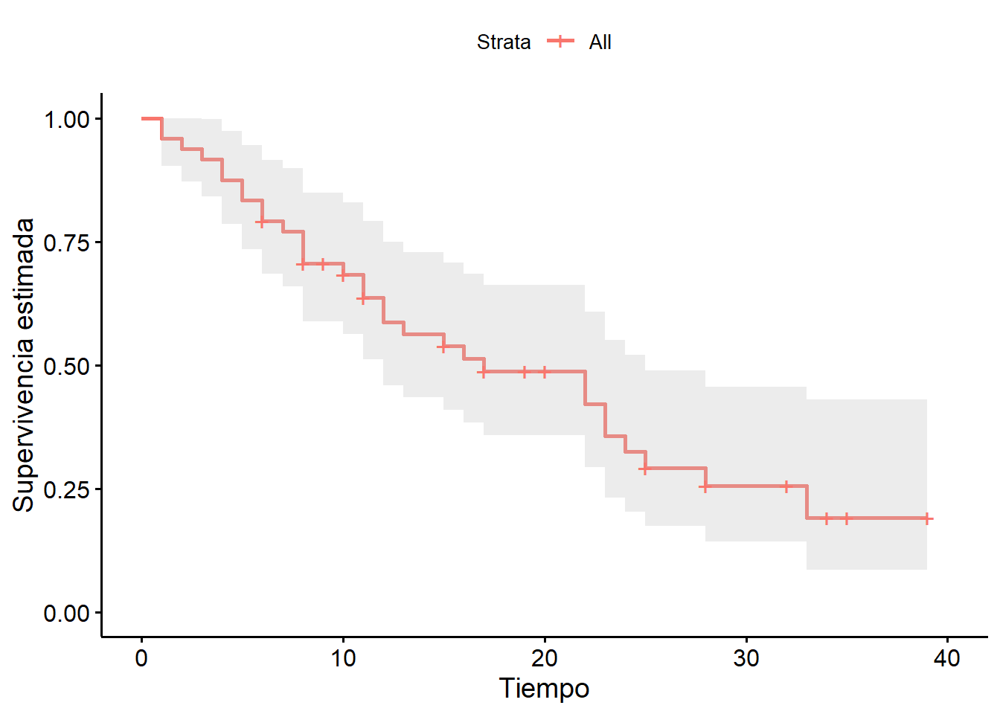
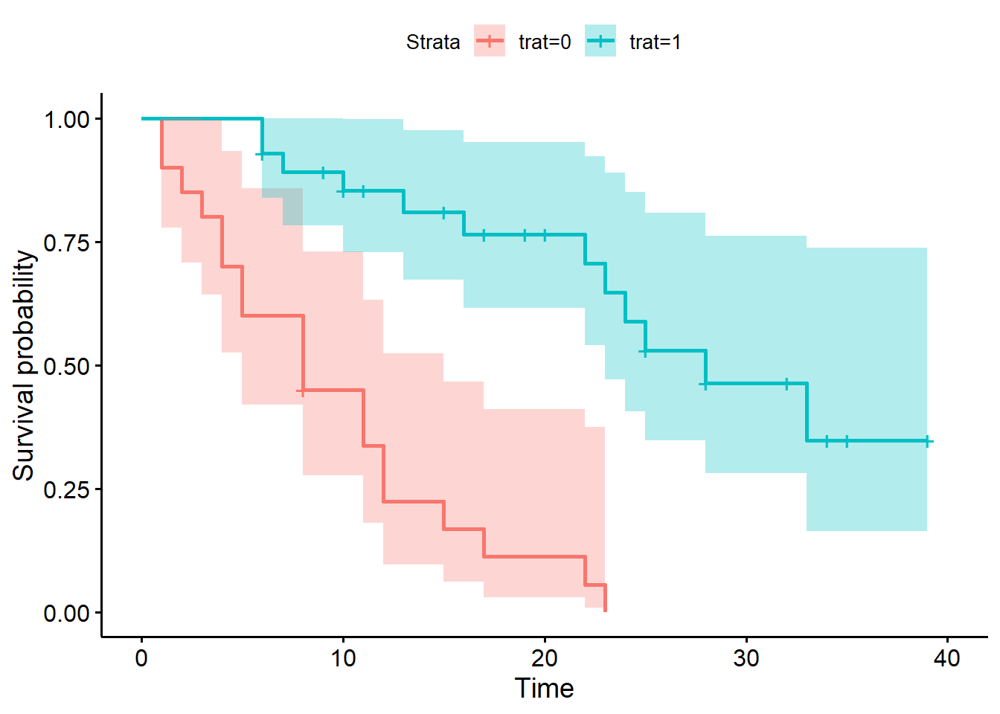
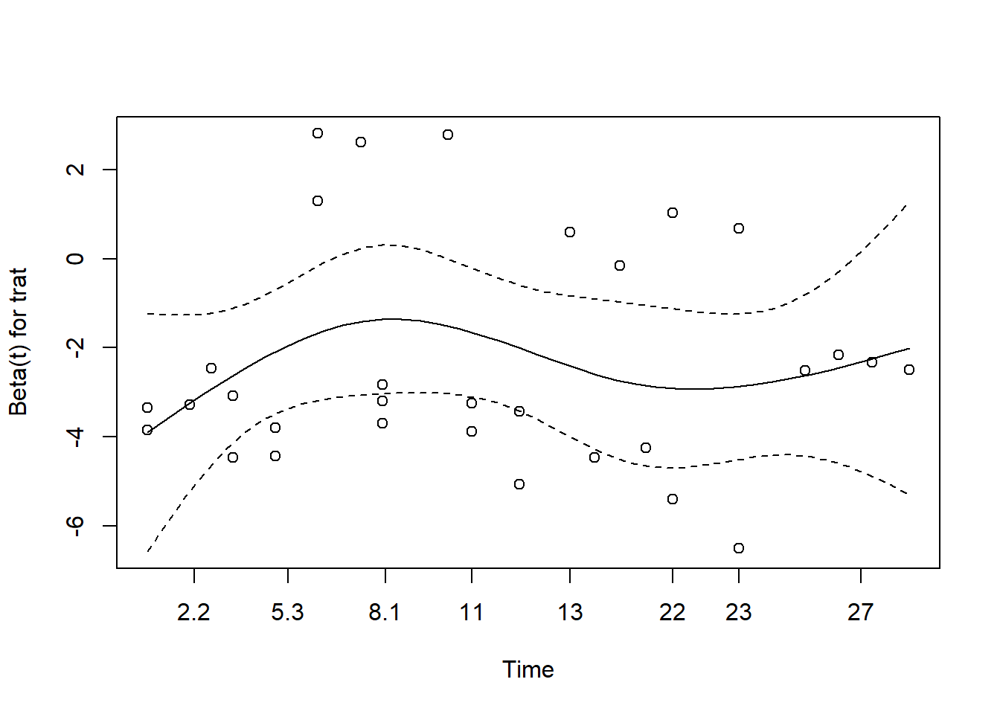
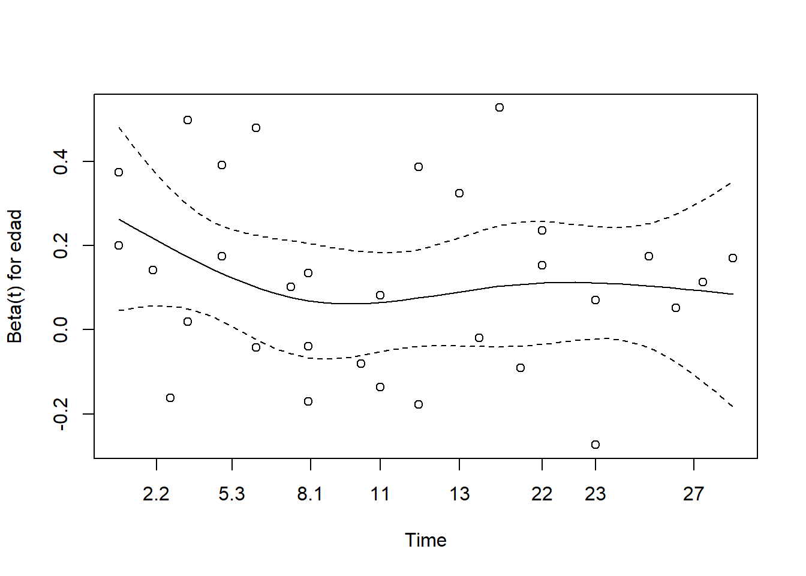
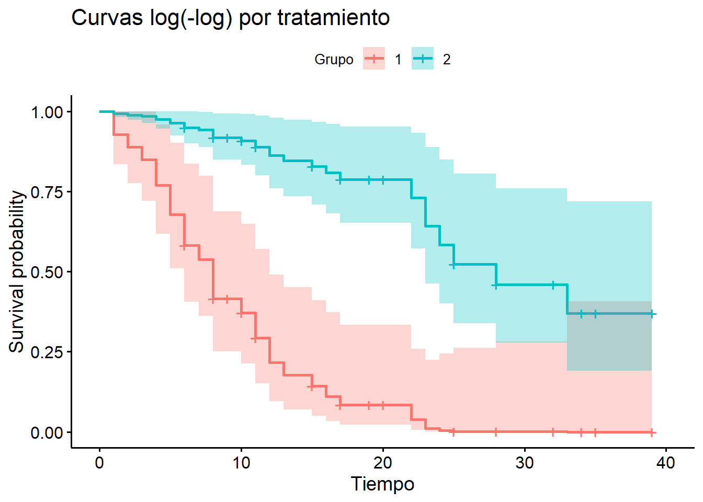
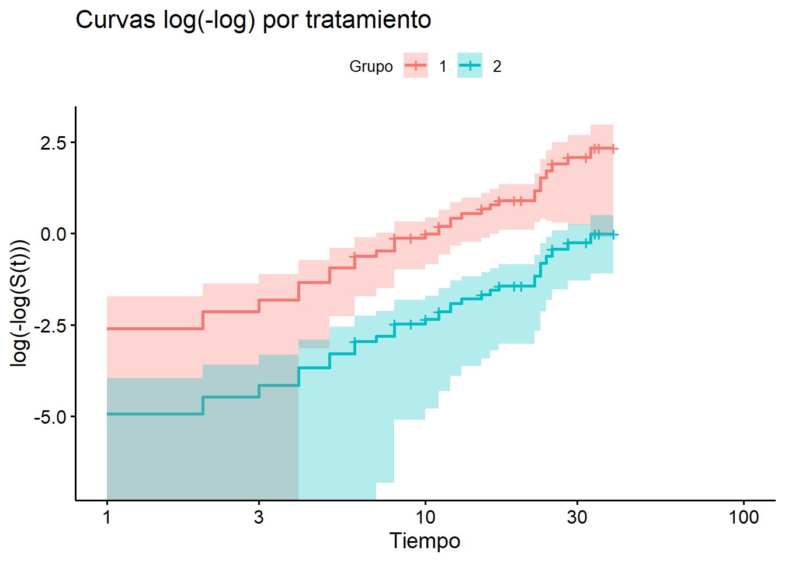

packages <- c("survival","haven","survminer","dplyr","knitr")
if (length(setdiff(packages, rownames(installed.packages()))) > 0) {
install.packages(setdiff(packages, rownames(installed.packages())), repos = "http://cran.rstudio.com")
}
sapply(packages, require, character.only=TRUE)Análisis de Supervivencia (Reproducción de análisis en Stata)
Cargar datos
datos <- read_dta("../Supervivencia_Nacho/cancer.dta")
head(datos)# A tibble: 6 × 4
tiempo muerte trat edad
<dbl> <dbl> <dbl> <dbl>
1 1 1 0 61
2 1 1 0 65
3 2 1 0 59
4 3 1 0 52
5 4 1 0 56
6 4 1 0 67datos$trat <- as.factor(datos$trat)
summary(datos) tiempo muerte trat edad
Min. : 1.00 Min. :0.0000 0:20 Min. :47.00
1st Qu.: 7.75 1st Qu.:0.0000 1:28 1st Qu.:50.75
Median :12.50 Median :1.0000 Median :56.00
Mean :15.50 Mean :0.6458 Mean :55.88
3rd Qu.:23.00 3rd Qu.:1.0000 3rd Qu.:60.00
Max. :39.00 Max. :1.0000 Max. :67.00 Declarar objeto de supervivencia
datos <- datos %>%
mutate(surv_obj = Surv(tiempo, muerte))
print(datos$surv_obj) [1] 1 1 2 3 4 4 5 5 8 8+ 8 8 11 11 12 12 15 17 22
[20] 23 6 6+ 7 9+ 10+ 11+ 13 15+ 16 19+ 20+ 22 23 32+ 6 10 17+ 19+
[39] 24 25+ 25 28 28+ 32+ 33 34+ 35+ 39+Estimación de Kaplan-Meier
ajuste_km <- survfit(surv_obj ~ 1, data = datos)
ggsurvplot(ajuste_km, conf.int = TRUE,
xlab = "Tiempo", ylab = "Supervivencia estimada")
Estimaciones de supervivencia
summary(ajuste_km)Call: survfit(formula = surv_obj ~ 1, data = datos)
time n.risk n.event survival std.err lower 95% CI upper 95% CI
1 48 2 0.958 0.0288 0.9034 1.000
2 46 1 0.938 0.0349 0.8715 1.000
3 45 1 0.917 0.0399 0.8417 0.998
4 44 2 0.875 0.0477 0.7863 0.974
5 42 2 0.833 0.0538 0.7343 0.946
6 40 2 0.792 0.0586 0.6847 0.915
7 37 1 0.770 0.0608 0.6598 0.899
8 36 3 0.706 0.0661 0.5878 0.848
10 31 1 0.683 0.0678 0.5626 0.830
11 29 2 0.636 0.0708 0.5115 0.791
12 26 2 0.587 0.0733 0.4598 0.750
13 24 1 0.563 0.0742 0.4345 0.729
15 23 1 0.538 0.0749 0.4098 0.707
16 21 1 0.513 0.0756 0.3839 0.685
17 20 1 0.487 0.0761 0.3586 0.661
22 15 2 0.422 0.0786 0.2931 0.608
23 13 2 0.357 0.0788 0.2318 0.550
24 11 1 0.325 0.0780 0.2027 0.520
25 10 1 0.292 0.0767 0.1747 0.489
28 8 1 0.256 0.0753 0.1436 0.455
33 4 1 0.192 0.0791 0.0855 0.430Comparación por grupos (trat)
diff_trat <- survdiff(Surv(tiempo, muerte) ~ trat, data = datos)
print(diff_trat)Call:
survdiff(formula = Surv(tiempo, muerte) ~ trat, data = datos)
N Observed Expected (O-E)^2/E (O-E)^2/V
trat=0 20 19 7.25 19.07 28.3
trat=1 28 12 23.75 5.82 28.3
Chisq= 28.3 on 1 degrees of freedom, p= 1e-07 ajuste_trat <- survfit(Surv(tiempo, muerte) ~ trat, data = datos)
summary(ajuste_trat)Call: survfit(formula = Surv(tiempo, muerte) ~ trat, data = datos)
trat=0
time n.risk n.event survival std.err lower 95% CI upper 95% CI
1 20 2 0.9000 0.0671 0.77767 1.000
2 18 1 0.8500 0.0798 0.70707 1.000
3 17 1 0.8000 0.0894 0.64257 0.996
4 16 2 0.7000 0.1025 0.52541 0.933
5 14 2 0.6000 0.1095 0.41951 0.858
8 12 3 0.4500 0.1112 0.27720 0.731
11 8 2 0.3375 0.1082 0.18005 0.633
12 6 2 0.2250 0.0971 0.09660 0.524
15 4 1 0.1687 0.0876 0.06101 0.467
17 3 1 0.1125 0.0743 0.03083 0.410
22 2 1 0.0562 0.0544 0.00844 0.375
23 1 1 0.0000 NaN NA NA
trat=1
time n.risk n.event survival std.err lower 95% CI upper 95% CI
6 28 2 0.929 0.0487 0.838 1.000
7 25 1 0.891 0.0592 0.783 1.000
10 23 1 0.853 0.0682 0.729 0.997
13 20 1 0.810 0.0769 0.672 0.976
16 18 1 0.765 0.0848 0.616 0.951
22 13 1 0.706 0.0966 0.540 0.923
23 12 1 0.647 0.1049 0.471 0.889
24 11 1 0.588 0.1107 0.407 0.851
25 10 1 0.530 0.1142 0.347 0.808
28 8 1 0.463 0.1175 0.282 0.762
33 4 1 0.348 0.1336 0.164 0.738ggsurvplot(ajuste_trat,
data = datos,
conf.int = TRUE)
Modelo de Cox con trat como covariable
modelo_cox0 <- coxph(Surv(tiempo, muerte) ~ 1, data = datos)
modelo_cox1 <- coxph(Surv(tiempo, muerte) ~ trat, data = datos)
modelo_cox2 <- coxph(Surv(tiempo, muerte) ~ trat + edad, data = datos)
summary(modelo_cox0)Call: coxph(formula = Surv(tiempo, muerte) ~ 1, data = datos)
Null model
log likelihood= -99.50931
n= 48 summary(modelo_cox1)Call:
coxph(formula = Surv(tiempo, muerte) ~ trat, data = datos)
n= 48, number of events= 31
coef exp(coef) se(coef) z Pr(>|z|)
trat1 -2.0850 0.1243 0.4443 -4.692 2.7e-06 ***
---
Signif. codes: 0 '***' 0.001 '**' 0.01 '*' 0.05 '.' 0.1 ' ' 1
exp(coef) exp(-coef) lower .95 upper .95
trat1 0.1243 8.045 0.05203 0.297
Concordance= 0.727 (se = 0.035 )
Likelihood ratio test= 25.05 on 1 df, p=6e-07
Wald test = 22.02 on 1 df, p=3e-06
Score (logrank) test = 29.15 on 1 df, p=7e-08summary(modelo_cox2)Call:
coxph(formula = Surv(tiempo, muerte) ~ trat + edad, data = datos)
n= 48, number of events= 31
coef exp(coef) se(coef) z Pr(>|z|)
trat1 -2.33853 0.09647 0.46052 -5.078 3.81e-07 ***
edad 0.11650 1.12355 0.03745 3.111 0.00186 **
---
Signif. codes: 0 '***' 0.001 '**' 0.01 '*' 0.05 '.' 0.1 ' ' 1
exp(coef) exp(-coef) lower .95 upper .95
trat1 0.09647 10.37 0.03912 0.2379
edad 1.12355 0.89 1.04405 1.2091
Concordance= 0.809 (se = 0.041 )
Likelihood ratio test= 34.8 on 2 df, p=3e-08
Wald test = 29.66 on 2 df, p=4e-07
Score (logrank) test = 37.42 on 2 df, p=7e-09# Log-verosimilitud y AIC
logLik(modelo_cox0)'log Lik.' -99.50931 (df=0)logLik(modelo_cox1)'log Lik.' -86.98673 (df=1)logLik(modelo_cox2)'log Lik.' -82.10971 (df=2)# Comparación con test de razón de verosimilitud
anova(modelo_cox0, modelo_cox1, test = "LRT")Analysis of Deviance Table
Cox model: response is Surv(tiempo, muerte)
Model 1: ~ 1
Model 2: ~ trat
loglik Chisq Df Pr(>|Chi|)
1 -99.509
2 -86.987 25.045 1 5.6e-07 ***
---
Signif. codes: 0 '***' 0.001 '**' 0.01 '*' 0.05 '.' 0.1 ' ' 1anova(modelo_cox1, modelo_cox2, test = "LRT")Analysis of Deviance Table
Cox model: response is Surv(tiempo, muerte)
Model 1: ~ trat
Model 2: ~ trat + edad
loglik Chisq Df Pr(>|Chi|)
1 -86.987
2 -82.110 9.754 1 0.001789 **
---
Signif. codes: 0 '***' 0.001 '**' 0.01 '*' 0.05 '.' 0.1 ' ' 1El Criterio de Información de Akaike (AIC) se calcula como una medida de la calidad relativa de un modelo estadístico, considerando tanto la bondad de ajuste como la complejidad del modelo, y se obtiene restando dos veces el logaritmo natural de la máxima verosimilitud del modelo a dos veces el número de parámetros del modelo. Fórmula del AIC: La fórmula general para calcular el AIC es: \[AIC = 2k - 2ln(L) \] Donde: \(k\): es el número de parámetros del modelo. \(ln(L)\): es el logaritmo natural de la máxima verosimilitud del modelo.
Interpretación: El mejor modelo es aquel que tiene el menor valor de AIC . Un AIC más bajo indica un mejor equilibrio entre el ajuste a los datos y la simplicidad del modelo, penalizando la complejidad excesiva y evitando el sobreajuste.
El AIC permite comparar modelos de diferentes familias utilizando métodos de ajuste similares, como la máxima verosimilitud.
aic_tabla <- data.frame(
Modelo = c("Modelo 0","Modelo 1", "Modelo 2"),
params = c(length(coef(modelo_cox0)),
length(coef(modelo_cox1)),
length(coef(modelo_cox2))),
logLik = c(as.numeric(logLik(modelo_cox0)),
as.numeric(logLik(modelo_cox1)),
as.numeric(logLik(modelo_cox2))),
AIC = c(AIC(modelo_cox0),
AIC(modelo_cox1),
AIC(modelo_cox2))
)
kable(aic_tabla, caption = "Comparación de AIC y logLik entre modelos")| Modelo | params | logLik | AIC |
|---|---|---|---|
| Modelo 0 | 0 | -99.50931 | 199.0186 |
| Modelo 1 | 1 | -86.98673 | 175.9735 |
| Modelo 2 | 2 | -82.10971 | 168.2194 |
# Suponemos que el modelo 3 es el elegido por AIC
cox.zph(modelo_cox2) chisq df p
trat 0.0209 1 0.88
edad 0.6725 1 0.41
GLOBAL 0.6726 2 0.71plot(cox.zph(modelo_cox2))

fit <- survfit(modelo_cox2,
newdata = data.frame(edad = median(datos$edad), trat = as.factor(c(0, 1))))
ggsurvplot(
fit,
data = datos,
legend.title = "Grupo",
xlab = "Tiempo",
title = "Curvas log(-log) por tratamiento"
)
ggsurvplot(
fit,
fun = "cloglog", # complementary log-log
data = datos,
legend.title = "Grupo",
xlab = "Tiempo",
ylab = "log(-log(S(t)))",
title = "Curvas log(-log) por tratamiento"
)